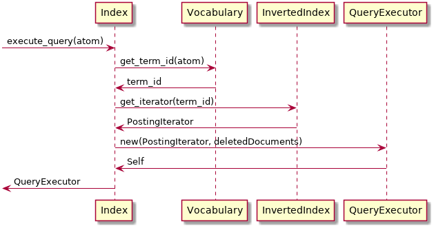
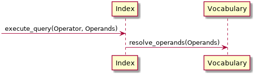
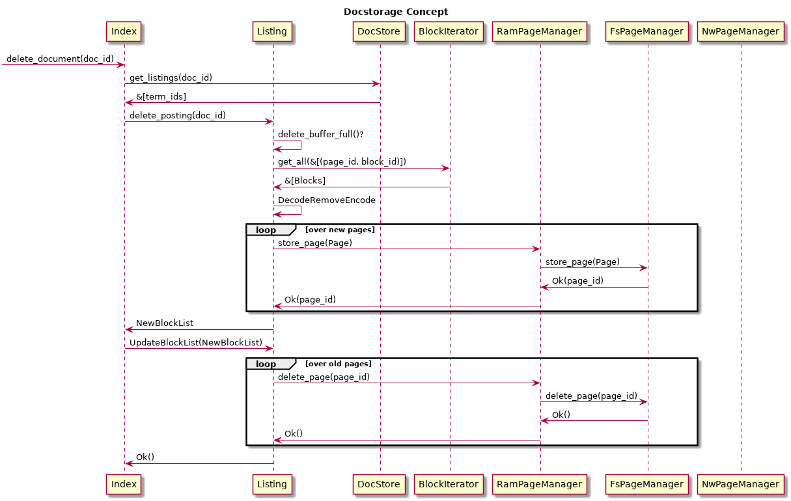
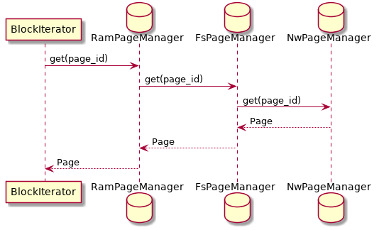
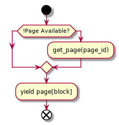

Table of Contents
1 Requirements
1.1 Speed
1.1.1 Any Query on 100MB indexed rawdata should execute in < 10ms
1.1.2 Simple (< 4 terms, no phrase query) Queries should execute in < 1ms
1.2 Memory
1.2.1 Minimal Memory Overhead per Index enabeling multi-tennant Systems
1.2.2 Moving data from memory to disk or network and back should be seamlessly possible depending on ram/disk pressure
1.2.3 Allow shared dictionaries between different indices for minimal memory overhead
1.3 Usability
1.3.1 sensible defaults, which can be tweeked if needed
1.3.2 documentation of public api
1.3.3 as few as possible generic parameters on index
1.4 Flexibility
1.4.1 data-type independent
1.5 Functionality
1.5.1 Mutable Indices
1.5.2 Boolean Retrieval
1.5.3 Ranked Retrieval
1.5.4 Semantic Relations (Taxonomies, Thesaurus, etc.)
1.5.5 Relevance Feedback
2 Modules
3 Processes
3.1 Index documents
3.2 Execute Query
3.2.1 QueryAtom

3.2.2 ArbitraryQuery

3.3 Pages Blocks
3.3.1 Indexing Process

3.3.2 Document Deletion

3.3.3 Get Page/Block

3.3.4 Iterate over Blocks

4 Traits
4.1 Vocabulary
4.1.1 Method
fn getoradd(Term) -> termid
4.2 PageManager
4.2.1 Methods
fn storepage(Page) -> pageid fn getblocks(Vec<(pageid, blockid)>) -> impl Iterator<Item=Block> fn storenewblock(Block) -> pageid fn storeinpage(pageid, Block) -> Result<blockid, pageid>
4.3 Compressable
4.3.1 Methods
fn compress(&mut RingBuffer<Self>) -> Result<Block> fn decompress(Block, &mut RingBuffer<Self>) -> Result<usize>
5 Implementation Plans
5.1 General Strategy
Find modular testable things. Implement them module by module with extensive tests for all
5.2 Modules
5.2.1 RingBuffer
- Implement Generically
5.2.2 PageManager
- Define Trait
- Implement RamPageManager
- Implement FsPageManager
- Implement Combination
- Implement BlockIterator
5.2.3 Listings and Postings
- Define Postings and Listings
- Implement naive compression algorithm
5.2.4 Vocabulary
- Define Vocabulary Trait
- Implement Vocabulary Trait for HashMap